(Terence teaches in University of San Francisco's MS in Data Science program. You might know Terence as the creator of the ANTLR parser generator.)
Please send comments, suggestions, or fixes to Terence.
Contents
in progress
ADD LINKS TO IMAGES
Linear and logistic regression models are important because they are interpretable, fast, and form the basis of deep learning neural networks. They are also extremely simple; we're just fitting lines (or hyperplanes) through training data. Unfortunately, linear models have a tendency to chase outliers in the training data, which often leads to models that don't generalize well to new data. To produce models that generalize better, we all know to regularize our models. There are many forms of regularization, such as early stopping and dropout for deep learning, but for isolated linear models, Lasso and Ridge regularization are most common. (We'll call Lasso L1 and Ridge L2 for reasons that will become clear later.)
My goal in this article is to provide a visual explanation for regularization of linear models and to identify the critical stumbling block that makes it hard to understand how regularization works. Here it is upfront: the math used to implement regularization does not correspond to the pictures everyone uses to explain regularization. Take a look at the oft-copied picture on page 71 “Shrinkage Methods” from the excellent book The Elements of Statistical Learning (Hastie, Tibshirani, Friedman):
Students see this multiple times in their careers but have trouble mapping that to the relatively straightforward mathematics used to regularize linear model training. The simple reason is that those graphs show how we regularize models conceptually, with hard constraints, not how we actually implement regularization, with soft constraints! We'll go into that in detail shortly. This single disconnect has no doubt caused untold amounts of consternation for those trying to deeply understand regularization. Read on to learn the real story.
I also want to answer key questions regarding L1 Lasso regularization:
These are not easy questions to answer in detail, even for mathematicians. Try explaining simply, without handwaving, to an inquisitive and persistent student; you'll find that you're not exactly sure. ;)
Regularization for linear and logistic regression is done through the same penalty term in the loss function and so I will focus on just linear regression in this article.
I'm assuming that readers more or less understand the mathematics of linear models and how we find optimal model coefficients to fit lines, but let's take a minute to review the important equations so we're all on the same page. (My plan is to keep mathematics notation to a minimum in this article though.)

A single-variable linear regression model is familiar to us from high school algebra:  , where (coefficient)
, where (coefficient)  is the y-intercept and
is the y-intercept and  is the slope of the line. For example, let's say we have the following 10 training records and want to draw the best fit line through the points, as shown in Figure 1.1.
is the slope of the line. For example, let's say we have the following 10 training records and want to draw the best fit line through the points, as shown in Figure 1.1.
The best fit line is  , where we use
, where we use  to indicate it is an approximation of the true underlying relationship between x and y. Using Python and sklearn, it's trivial to fit a linear model to this data:
to indicate it is an approximation of the true underlying relationship between x and y. Using Python and sklearn, it's trivial to fit a linear model to this data:
and get those optimal coefficients:
optimal_beta0 = -0.170, optimal_beta1 = 1.022 y_pred [-0.17 0.97 2.1 3.24 4.37 5.51 6.64 7.78 8.91 10.05]

The notion of best fit means choosing and to minimize the average error, the average difference between the known true  values and the model predictions,
values and the model predictions,  . To make things nice mathematically, and to avoid needing an absolute value operator, linear regression optimizes the average (mean) squared error. That's where the term Ordinary Least Squares (OLS) comes from. The MSE function is a quadratic that always gives us a bowl shaped loss function, for 2 coefficients anyway, as shown in Figure 1.2. For all n training records
. To make things nice mathematically, and to avoid needing an absolute value operator, linear regression optimizes the average (mean) squared error. That's where the term Ordinary Least Squares (OLS) comes from. The MSE function is a quadratic that always gives us a bowl shaped loss function, for 2 coefficients anyway, as shown in Figure 1.2. For all n training records  , we find
, we find  to minimize:
to minimize:

(If you're a numpy junkie, that is just np.mean(y - m.predict(x)) for vectors y and x.) Plugging the model, our line equation, into that MSE we get:


The loss function goes up as and move away from the bottom of the bowl. The big black dot represents the minimum loss location,  = (-0.17, 1.022). (See code/loss3d.py for the code.) Three-dimensional plots are sometimes hard to interpret on a two-dimensional screen, so you will often see the loss function projected down onto the , plane, as shown in Figure 1.3 (code/loss2d.py).
= (-0.17, 1.022). (See code/loss3d.py for the code.) Three-dimensional plots are sometimes hard to interpret on a two-dimensional screen, so you will often see the loss function projected down onto the , plane, as shown in Figure 1.3 (code/loss2d.py).
It's important to see the relationship between Figure 1.1 and Figure 1.2. So, just to be clear, shifting and in Figure 1.2 causes the orange line in Figure 1.1 to tilt or move up and down, away from the best fit.
So far so good. Given some data, we can fit a best fit line through the data where “best fit” means the line that minimizes the average squared between true y values and those predicted by the model. Now, let's tweak the last y value to be about 10 times as big:
optimal_beta0 = -13.150, optimal_beta1 = 5.402 y_pred [-13.15 -7.15 -1.14 4.86 10.86 16.86 22.87 28.87 34.87 40.87]

Look what happens to the best (orange) fit line, as shown in Figure 1.4! It has tilted substantially upwards towards the outlier. Because the loss function squares the error, an outlier can seriously distort the shape of the “bowl” and, hence, the minimum location of the optimal and coefficients. Instead of  and
and  , the coefficients are
, the coefficients are  and
and  . All real data is noisy and sometimes outliers are common, which provides us with the motivation to regularize our linear models.
. All real data is noisy and sometimes outliers are common, which provides us with the motivation to regularize our linear models.
Let's try Ridge regularization. Using sklearn again, we can fit a new line through the data using Ridge regression:
optimal_beta0 = 7.015, optimal_beta1 = 1.369 y_pred [ 7.02 8.54 10.06 11.58 13.1 14.62 16.14 17.67 19.19 20.71]

The alpha=300 hyper parameter controls how much regularization we need, in this case a lot. (For those using TensorFlow's keras interface, you might use something like activity_regularizer=regularizers.l2(300) in one of your layers.) While sklearn uses alpha, we will use  as the regularization hyper parameter as we get into the regularization penalty term of the loss function. Notice that the regularized slope,
as the regularization hyper parameter as we get into the regularization penalty term of the loss function. Notice that the regularized slope,  , is very close to the unregularized without the outlier. With regularization, the orange fitted line is held back to an appropriate angle, as shown in Figure 1.5. Using Lasso regularization, Lasso(alpha=45).fit(x, y), we'd get similar results.
, is very close to the unregularized without the outlier. With regularization, the orange fitted line is held back to an appropriate angle, as shown in Figure 1.5. Using Lasso regularization, Lasso(alpha=45).fit(x, y), we'd get similar results.
The price we pay for keeping the angle sane, is a less accurate (biased) overall result than we saw for the unregularized model for non-outlier data. The regularized y-intercept is larger,  , compared to unregularized
, compared to unregularized  for the data without the outlier. You can see that the orange line rests above the majority of the data points instead of going through them. The outlier is still pulling the best fit line upward a little bit.
for the data without the outlier. You can see that the orange line rests above the majority of the data points instead of going through them. The outlier is still pulling the best fit line upward a little bit.


We've motivated the need for regularization by showing how even a single outlier can seriously skew our model, but we still have no idea how regularization works. Let's look at a real but small data set called Ames housing price data (ames.csv) because it will point is in the direction of the solution. Figure 1.6 shows a bar chart with one bar per coefficient using unregularized linear regression (with normalized explanatory variables and dummy-encoded categorical variables). Wow. Those are some big coefficients and, in fact, I had to clip them to slope magnitudes less than 1e8! Contrast that with the Ridge-regularized coefficients in Figure 1.7, which are in a much more reasonable range. The accuracy of the unregularized model is ridiculously bad, with an error of  dollars on a 20% validation set. Using Ridge regression, however, the error is only about $18k per house. With an average house price of about $180k, that's only 10% error on the same validation set. (If you're an R^2 fan, the regularized validation R^2 is 0.84.)
dollars on a 20% validation set. Using Ridge regression, however, the error is only about $18k per house. With an average house price of about $180k, that's only 10% error on the same validation set. (If you're an R^2 fan, the regularized validation R^2 is 0.84.)
That gives us the clue we need to arrive at the premise of regularization: extreme coefficients are unlikely to yield models that generalize well. The solution, therefore, is simply to constrain the magnitude of linear model coefficients so they don't get too big. Constraining the coefficients means not allowing them to reach their optimal position, at the minimum loss location. That means we pay a price for improved generality in the form of decreased accuracy (increase in bias). Recall what we observed in Figure 1.5 where the orange line sat a bit above the majority of the data. This is a worthwhile trade because, as we can see from this example, unregulated models on real data sets don't generalize well (they have terrible accuracy on validation sets).
At this point, we've set the stage: Regularization is important for model generalization and the idea behind regularization is simply to constrain coefficients, at a small cost in overall accuracy. Now, let's figure out how regularization constrains coefficients, at least conceptually. (In a later section, we'll look at how regularization actually works in practice.)

Take a look at the hypothetical loss function in Figure 1.8, which is just 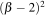 for some 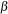 coefficient. (In terms of high school x and y, this is just or “a bowl shifted to 2”.) The minimum loss is the bottom of the curve at 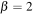. But, imagine we know that any coefficient bigger than 1.0 (or -1.0) will reduce generality. The best regularized coefficient is, therefore, 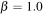, which is on the constraint boundary in the direction of the minimum. By “best,” we mean the closest we can get a coefficient to the loss function minimum location without exceeding our constraint.
If the loss function minimum were on the other side of the vertical axis at, say, 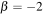 then the best regularized coefficient would be . We call this constraint of coefficients a hard constraint because the coefficients are strictly limited. (Foreshadowing, we actually implement these with soft constraints that just make bigger coefficients more and more expensive.) Mathematically, this hard constraint in one dimension is 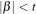, but we could also use 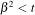 where t represents the largest coefficient we want to allow (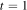 in this case). In practice, we use a grid search to find the t that gives the lowest validation error.
Now, let's consider the case where we have two coefficients to regularize instead of one (there are two variables in our explanatory matrix). Moving from one to two coefficients means the constraint line becomes a constraint region, and there are two common choices for the shape of this region. The first is a circle, which is used for Ridge, and the second is a diamond shape, which is used for Lasso. Ridge has some simpler properties, so let's take a look at it first.

Figure 1.9 shows a hypothetical loss function where the minimum is at 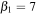, 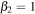. Surrounding the origin (0,0) there is a circular hard constraint that would prevent coefficients from reaching the minimum loss function location. The best we could do would be coefficients on the constraint circle in the direction of the loss function minimum. Constraining two coefficients to a circle of radius r surrounding the origin means constraining the length of vector (0,0) to  to r. The length of a vector is just the square root of the sum of the elements, 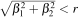. Or, we could get rid of the square root and pick some other constant, t, for the constraint: 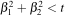. However we choose t, summing the square of coefficients sweeps out a circle on the coefficient plane. As in the one-variable case, in practice, we use a grid search to find the t that gives the minimum validation error; the value of t itself is not really meaningful to us.
to r. The length of a vector is just the square root of the sum of the elements, 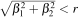. Or, we could get rid of the square root and pick some other constant, t, for the constraint: 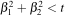. However we choose t, summing the square of coefficients sweeps out a circle on the coefficient plane. As in the one-variable case, in practice, we use a grid search to find the t that gives the minimum validation error; the value of t itself is not really meaningful to us.
While we're talking about names, L2 regression was called “Ridge” in the original paper from 1970 because the author remarked that surface plots of quadratic functions often look like ridges.
Also, L2 regularization (penalizing loss functions with sum of squares) is called weight decay in deep learning neural networks.
To get a feel for L2 regularization, look at the hypothetical loss functions in Figure 1.10, where I have projected the 3D loss “bowl” function onto the plane so we're looking at it from above. The big black dot indicates the (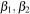) coordinate where the loss of function is minimum (bottom of the bowl). The big red dot is the () point on the boundary closest to the optimal location subject to the circular L2 constraint.
| (a) | (b) | (c) | (d) |
|---|---|---|---|
|
|
|
|
|
All of these loss functions are symmetric, like your morning cereal bowl, which makes it easy to identify where we'd find the regularized () on the boundary circle. For symmetric loss functions, draw a line from the origin to the minimum loss function location, indicated by the dashed line in Figure 1.10. The optimal regularized () coefficients are at the intersection of that line and the boundary.
Although I don't show it here, if the minimum loss function location sits within the boundary region, then the regularized location is exactly the same as the minimum loss location. Another special case is when the minimum loss location sits on one of the axes, as in Figure 1.10 (b). One of the regularized coefficients will also sit on the axis and, hence, one of the coefficients will be zero. We will talk a lot about zero coefficients later when comparing Ridge and Lasso.
In general, the loss functions will not be symmetric, as depicted in Figure 1.11. Identifying the regularized coefficients on the boundary circle is not as simple as drawing a line between the origin and the minimum loss location, such as in Figure 1.11 (a). (I'm sure in a non-Euclidean space, such as one warped by gravity, we could draw a “straight” line; is there an algebraic topologist in the house?) Now, the approaches to identify the location of minimum loss that sits directly on the boundary circle. That is exactly how I plotted the location of the red dots in these figures. I computed the loss function value at many points along the circle and simply identified the location where the loss function was the smallest. This is really important and so let's make a big deal out of it:
Finding the L2 coefficients location: The L2 regularized coefficients sit on the L2 boundary circle where the loss function has the minimum value. So, just walk around the circle and identify the location with the minimum loss function value. (Unless the minimum loss location is inside the circle, in which case the regularized coefficient location is the same as the minimum loss location.)
I see instructors and articles recommend students look for where a loss function contour line touches the boundary region, but this can get you in trouble. The contour maps are a 2D projection of a smooth 3D surface and so the number and location contour lines are kind of arbitrary. For example, I chose the number of contour lines in these plots, but I could've chosen one third as many, which would likely make it impossible to find a contour line that intersected the boundary region. It's better to stick with finding the minimum loss location on the boundary circle and try not to get clever with visual rules.
| (a) | (b) | (c) | (d) |
|---|---|---|---|
|
|
|
|

|
Let's look at the mathematics now. To regularize our MSE loss function is a simple matter of adding a “subject to” constraint to the definition, in this case, L2 norm :
Everything to the left of “subject to” is identical to the unregularized (MSE) loss function, except we are using the two variable linear model: 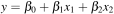. All we've done is to constrain how close () coefficients can get to the loss function minimum location. Note that we do not constrain the y-intercept (see page 64 in “The elements of statistical learning”). We are only concerned with constraining slope angles, not where the line touches the y-axis. We find the value of t using a brute force search that minimizes the validation error.
That's all there is to the concept of regularization: adding a hard constraint to the loss function equation. Congratulations, if you've gotten this far and understood everything! The only remaining wrinkle is how we actually implement this (see below).
Now, let's take a look at the other common form of regularization.
If we use a diamond shape rather than a circle around the origin as the boundary region, we get Lasso regularization, which we will call L1 regularization because it constrains 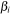 coefficients using the L1 norm. The L1 norm gives us a diamond shape, obtained by constraining the sum of coefficient magnitudes to some constant, t. Lasso stands for “Least Absolute Shrinkage and Selection Operator,” according to the original paper. Why we would choose a diamond over a circle will become clear shortly.
The plots in Figure 1.12 show the L1 diamond constraint regions in the special case where the loss function is symmetric. The regularized () coefficient location on the diamond occurs where a perpendicular line emanates from the diamond to the minimum loss location. The dotted lines in Figure 1.12 show these perpendicular lines. Contrast this with L2 regularization, which draws a line from the origin to the minimum loss location for symmetric loss functions.
| (a) | (b) | (c) | (d) |
|---|---|---|---|
|
|
|
|
|
In Figure 1.13, you'll see the general case where the loss functions are asymmetric. One of the key takeaways from these examples is that three out of four loss functions have a zero coefficient (the red dot is on an axis at a diamond peak). This is despite the fact that the minimum loss function locations look to be nowhere near an axis, which brings us to the difference between L1 and L2 in a nutshell: L1 tends to give a lot more zero coefficients than L2.
| (a) | (b) | (c) | (d) |
|---|---|---|---|
|
|
|
|
|
To find regularized coefficients, we follow the same rule we did for L2, except using a different boundary shape:
Finding the L1 coefficients location: The L1 regularized coefficients sit on the L1 boundary diamond where the loss function has the minimum value. So, just walk around the diamond and identify the location with the minimum loss function value. (Unless the minimum loss location is inside the diamond, in which case the regularized coefficient location is the same as the minimum loss location.)
Just as we did for L2, regularizing the loss function means adding a “subject to” constraint. The only difference is that we are summing the coefficient magnitudes (absolute values) rather than the squared coefficient values:
As before, we don't care what the value of t is per se; we find the t through brute force that gives the lowest validation error.
If you've made it this far, you now understand exactly how L1 Lasso and L2 Ridge regularization work conceptually. The next step is to compare the two in detail and then we'll be ready to describe the actual implementation of regularization (versus the conceptual mechanism we've seen so far).
If both of these regularization techniques work well, you might be wondering why we need both. It turns out they have different but equally useful properties. From a practical standpoint, L1 tends to shrink coefficients to zero whereas L2 tends to shrink coefficients evenly. L1 is therefore useful for feature selection, as we can drop any variables associated with coefficients that go to zero. L2, on the other hand, is useful when you have collinear/codependent features. Codependence tends to increase coefficient variance, making coefficients unreliable/unstable, which hurts model generality. L2 reduces the variance of these estimates, which counteracts the effect of codependencies.
One of the key questions that I want to answer is: “Does L1 encourage model coefficients to shrink to zero?” (The answer is, Yes!) So, let's do some two-variable simulations of random quadratic loss functions at random locations and see how many end up with a coefficient at zero. There is no guarantee that these random paraboloid loss functions in any way represent real data sets, but it's a way to at least compare L1 and L2 regularization. Let's start out with symmetric loss functions that look like bowls of various sizes and locations.

|

|
As you can see in the simulations (6000 trials), the L1 diamond constraint zeros a coefficient for any loss function whose minimum is in the zone perpendicular to the diamond edges. The L2 circular constraint only zeros a coefficient for loss function minimums on one of the axes. The gradation from green to purple represents the minimum distance of a coefficient pair on the circle to any of the coefficient zeros (North, South, East, West compass points). Clearly, L1 gives many more zero coefficients (66%) than L2 (3%) for symmetric loss functions.
Here's what the same simulation looks like for general (potentially asymmetric and at an angle) loss functions:

|

|
Because of the various angles and shapes, such as we saw in Figure 1.11, more of the regularized coefficients for both L1 (73%) and L2 (5%) constraints become zero. So this basically answers the question: Yes, L1 regularized coefficients are much more likely to become zeros than L2 coefficients.
On the other hand, we actually want to answer a more specific question: “Does L1 encourage zero coefficients for less predictive or useless features?” (Yep!) To answer that, we need to know what loss functions look like for less predictive features. Imagine one feature is pretty important and the other is not. That would imply that the loss function looks like a taco shell or canoe, and at 90 degrees to one of the axes. Figure 1.14 shows some examples for the L1 constraint. If is not very predictive as in subfigure (c), then movement left and right does not increase the cost very much, whereas, moving up and down costs a lot (we're crossing a lot of contour lines).
| (a) | (b) | (c) | (d) |
|---|---|---|---|

|

|

|

|
With the shape of those orthogonal loss functions in mind, let's do another simulation and see how many regularized coefficients go to zero:

|

|
Orthogonal loss functions result in more zero coefficients than the general case, which is what we would expect, but the effect is not huge; 73% to 80%. L2, on the other hand, sees a huge boost in the number of zero coefficients, from 5% to 43%! We definitely want more zero coefficients for the case where one of the features is less predictive. Fortunately, both L1 and L2 deliver in this case!
A more scientific approach would also do simulations for the many variable case, but I think this article provides enough evidence for me to believe L1 encourages zeros. Besides, James D. Wilson, a statistician and fellow faculty member, told me there's a theorem that says that the probability of a coefficient going to zero approaches 100% as the number of features goes to infinity. Apparently, as the number of features goes to infinity, the diamond-shaped collapses in on itself to a point.
where  scales the bowl in the direction,
scales the bowl in the direction,  scales the
scales the  direction,
direction,  controls the amount of tilt/angle away from vertical or horizontal, and (
controls the amount of tilt/angle away from vertical or horizontal, and ( ,
, ) is the position in coefficient space of the minimum loss function value. (
) is the position in coefficient space of the minimum loss function value. ( means uniform random variable between k and l.)
means uniform random variable between k and l.)
foo
Acknowledgements. I'd like to thank mathematicians Steve Devlin and David Uminsky, also faculty in University of San Francisco's MS in Data Science program, for helping me understand the mathematics and why L1 regularization encourages zero coefficients.
My MSDS621 project Using gradient descent to fit regularized linear models
Deep Learning Basics Lecture 3: Regularization I (slides) by Yingyu Liang at Princeton University.
Regularized Regression from University of Cincinnati.
Lecture notes on ridge regression by Wessel N. van Wieringen.
Ridge Regression: Biased Estimation for Nonorthogonal Problems by Hoerl and Kennard, Journal Technometrics, 1970.
Regression Shrinkage and Selection via the Lasso by Tibshirani in Journal of the Royal Statistical Society, 1996.